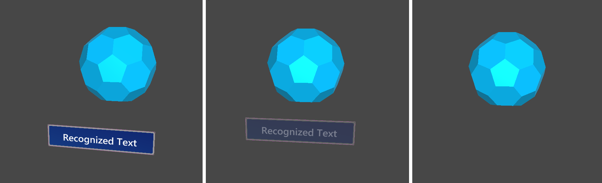

Speech
Speech input providers（例如Windows Speech Input）不创建任何控制器，而是允许您定义关键字，这些关键字将在识别时引发语音输入事件Input System Profile 中的Speech Commands Profile是您配置要识别的关键字的地方。对于每个命令，您还可以：
选择一个input action 以将其映射。通过这种方式，您可以例如将关键字Select 映射到相同的动作，从而具有与鼠标左键单击相同的效果。
指定一个 key code ，按下该键将产生相同的语音事件。
添加将在UWP应用中使用的localization key，以从应用资源中获取localization key。

处理语音输入
可以将 Speech Input Handler脚本添加到GameObject中，以使用UnityEvents。它会自动显示Speech Commands Profile中定义的关键字列表。

分配可选的SpeechConfirmationTooltip.prefab以在识别时显示动画确认提示框标签。
Alternatively, developers can implement the IMixedRealitySpeechHandler interface in a custom script component to handle speech input events.
示例场景
MixedRealityToolkit.Examples\Demos\Input\Scenes\Speech中的SpeechInputExample场景显示了如何使用语音。您还可以通过实现IMixedRealitySpeechHandler（请参阅event handlers表）直接在自己的脚本中收听语音命令事件。